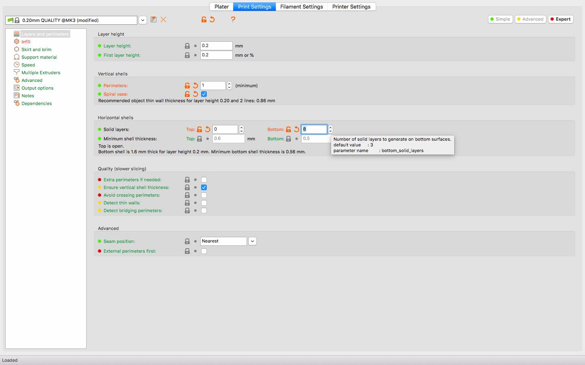
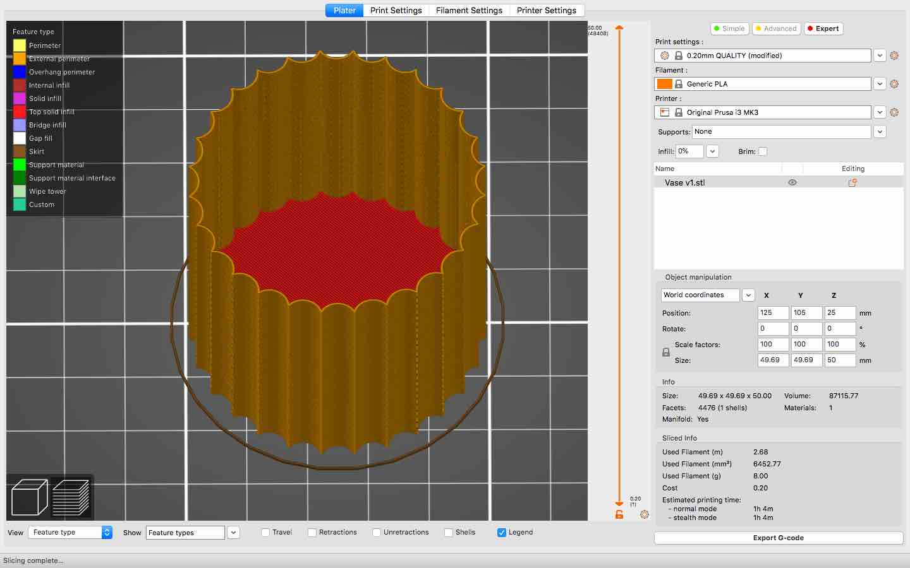
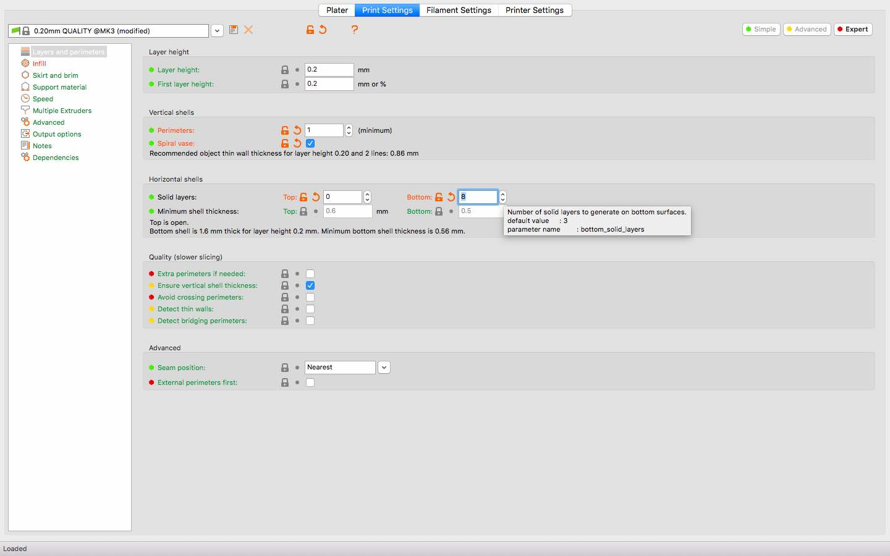
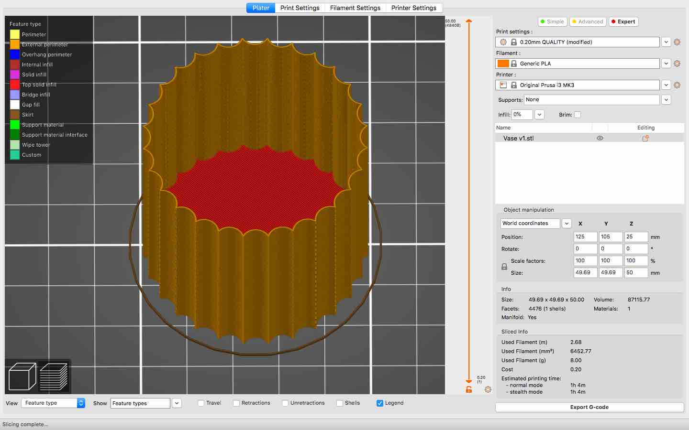
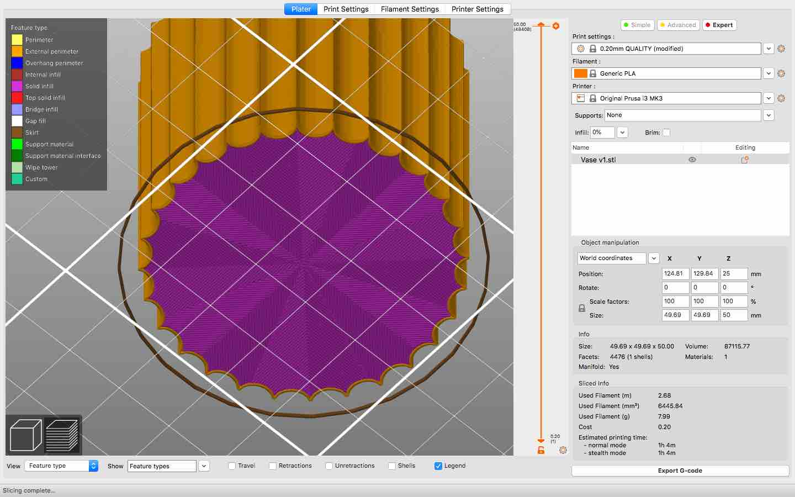
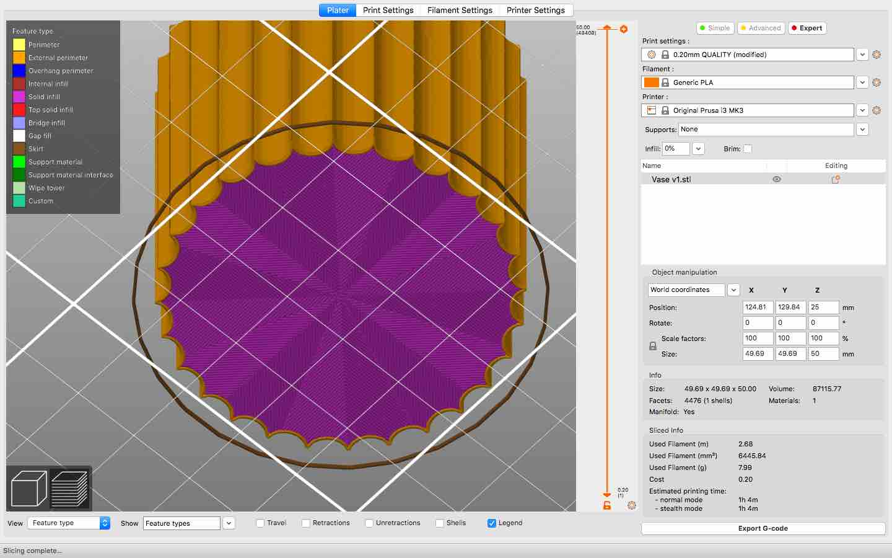

For the first part of this week's assignment I created a 3D printed planter, using vase mode in PrusaSlicer. After designing the body of the planter in Fusion360, I imported it into PrusaSlicer. Here, I made the layer height to be .20 mm and checked to make sure that I was using Generic PLA filament and an MK3 printer.
I then changed the Print Settings, in the upper, central bar, by checking off the "Spiral vase" box. This made it so that the printer would extrude a continuous "wrap-around" layer, with one perimeter and no infill or top layer. I also decided to make the bottom of the planter a bit thicker, so I added several more solid layers to the bottom.
 



In addition, I changed the bottom fill pattern to the Octogram spiral because I liked how that pattern looked.
 

Lastly, I edited the scale of the planter to be 10 cm wide and 8 cm tall. This object had an estimated printing time of about 3 hours. I exported the g-code, then moved on to using the 3D printer

To print the planter, I first preheated and unloaded the last filament. Then I inserted a new filament color. Next, I selected my file name and began the print. It took a long time, maybe about an hour, for the solid layers of the base to print.
The print ran very smoothly. When it was done, I took the bed off the machine, before removing the planter. I like how this print turned out, especially the pattern on the bottom.
The other aspect of this week's assignment was to design a watering can in Fusion 360.
I began by sketching and extruding an oval. Then, I sketched a few more lines that would help me create a new construction plane at an angle. On this plane, I sketched a circle, that would serve as the arm of the watering can, and I extruded it in two different directions.
From the face at the end of the spout, I extended another construction plane. I projected the center point of the circle below onto the new construction plane. This helped me draw a new circle, one that was a little bit bigger than the one below. After that, I used the Loft function to connect the smaller circle to the bigger circle, thereby creating the head of the spout.
Next, I shelled out the whole model and left an opening at the top of the can. Then, I sketched circles on the head of the spout, to serve as holes. To make this part of the design, I first drew four circles in a line, starting at the center and going up. Next, I used the Circular Pattern tool on a few of those circles to make duplicates that were equally spaced.
After finishing the sketch, I extruded all of those small circles downward to cut through the width of the model. Lastly, I added a fillet to the rim of the can.
Here, is my finished model!